Lavori degli studenti · 2025/26 · Interior Design
Corner Coffee. Un caffè alla portata di tutti.
Un gruppo di studentesse porta un angolo caffè nel giardino d'inverno dell'Accademia, pensato anche per chi si muove in sedia a rotelle. Il diario è breve, ma racconta un errore che insegna molto: l'IA ha disegnato un mobile bellissimo e ha perso proprio la cosa più importante del progetto.
- Gruppo
- Aurora Iodice, Lavinia Capitani, Valentina Maggiore, Irene Palluzzi
- Classe
- 3C · Interior Design
- Consegna
- Un micro-spazio per l'Accademia, con un arredo originale
- Strumenti
- ChatGPT, Gemini, AutoCAD, Photoshop, Magnific
Questo lavoro è del 2025/26 ed è stato fatto quasi tutto con ChatGPT nella versione base di allora. In un anno l'IA è cambiata molto: con i modelli di oggi molti di questi problemi si risolvono in un altro modo, o non si presentano proprio.
Per questo non lo mostriamo come una ricetta da copiare. Con gli strumenti di oggi queste studentesse avrebbero ragionato nello stesso modo, ma per risolvere problemi diversi. Le tecnologie e i metodi cambiano: il modo di ragionare resta.
Prima di tutto, guardale.
Il giardino d'inverno, rifatto: divani, tavoli e, lungo la parete, un mobile ad archi per il caffè. Le immagini sono generate con l'IA partendo da foto vere della stanza.
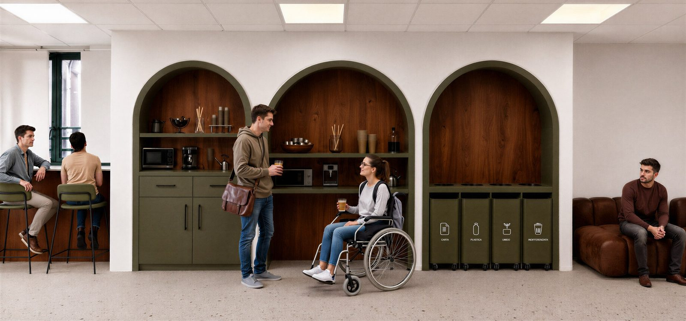
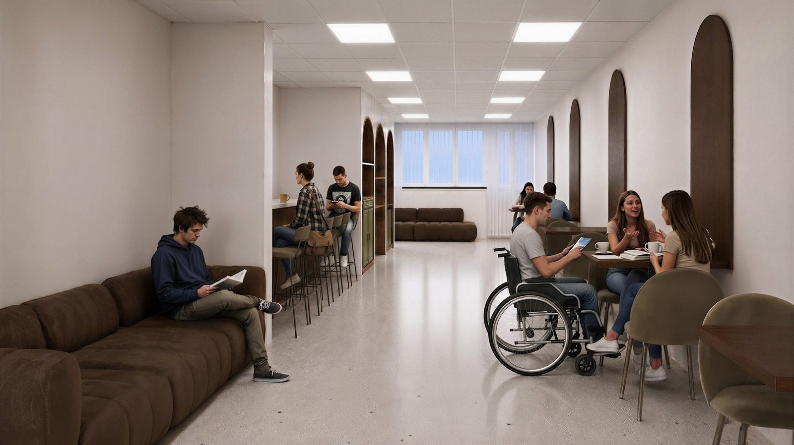
Guarda il modulo centrale del mobile. Perché è diverso dagli altri due?
Una pausa, ma non per tutti.
Il giardino d'inverno oggi è un lungo corridoio con divani in pelle e qualche tavolo. Manca un punto dove farsi un caffè o scaldare il pranzo, e la raccolta differenziata non ha un posto suo.
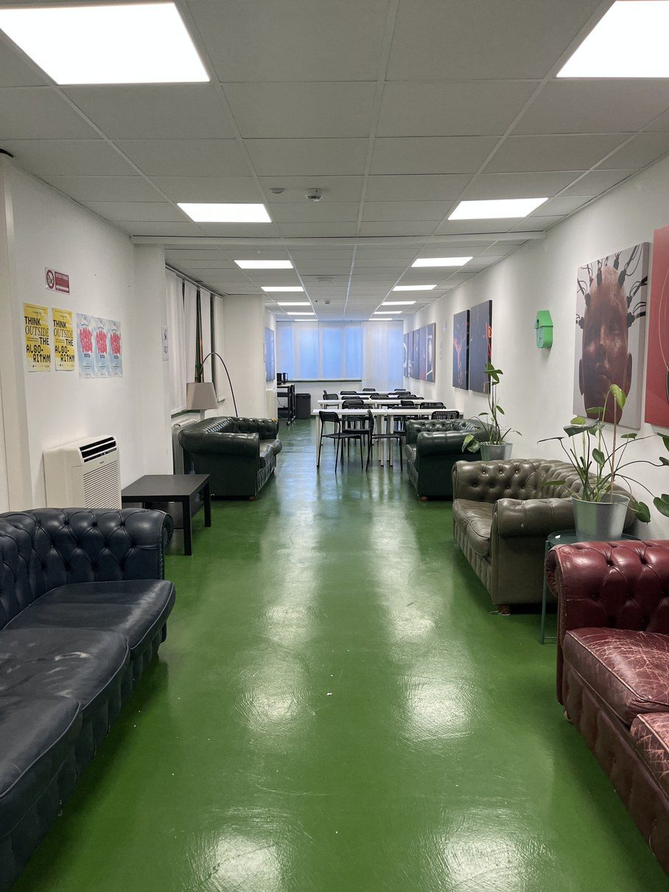
Studenti Una pausa veloce fra una lezione e l'altra.
Docenti Lo stesso spazio, senza dover uscire.
Personale Un punto ordinato anche per chi lavora qui tutto il giorno.
Persone con disabilità Poter fare tutto da sole, anche in sedia a rotelle.
Tre zone, materiali caldi.
Il corridoio diventa tre aree in fila: il coffee, i tavoli, i divani. Verde oliva, legno scuro e toni crema per un'atmosfera accogliente.
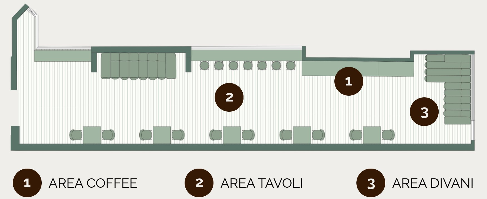
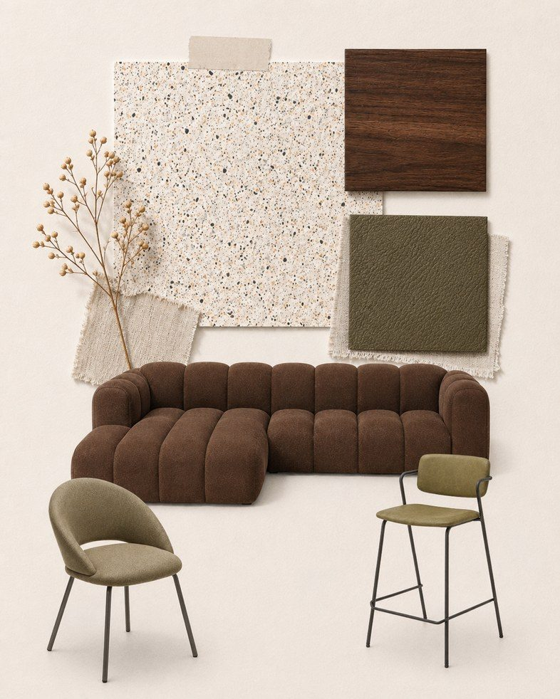
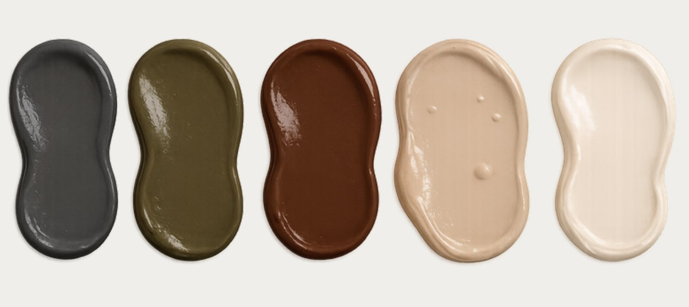
L'arredo originale: il corner coffee
Un mobile ad archi, in tre moduli diversi. Ognuno ha un compito:
- Per tutti Contenitori e piano a 90 cm: macchina del caffè, microonde, appoggio.
- Accessibile Più largo, con il piano a 75 cm e lo spazio libero sotto, per avvicinarsi in sedia a rotelle.
- Differenziata Quattro contenitori con un piano a 75 cm, raggiungibile da tutti.
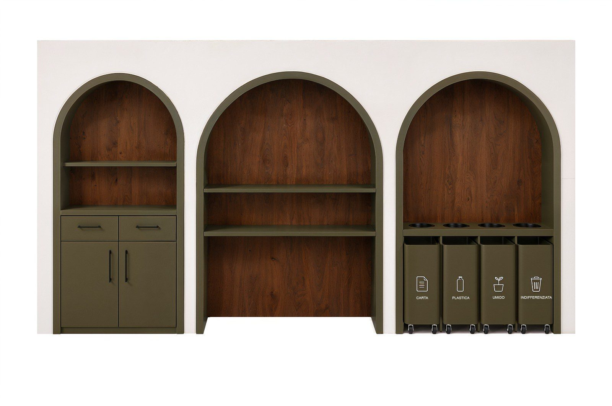
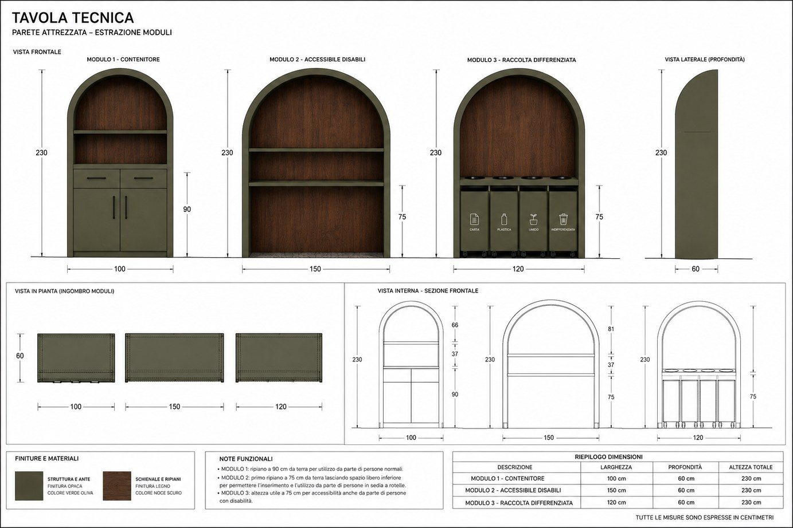
Le misure non sono inventate: vengono dalle norme sulle barriere architettoniche (legge 13/1989, D.M. 236/1989, D.P.R. 503/1996), che il gruppo aveva già studiato negli anni precedenti e ha ripassato con ChatGPT. Per esempio: piano da seduti fra 70 e 80 cm, almeno 70 cm liberi sotto, 150 cm di spazio per girare la sedia.
ApprofondisciLa tavola su ergonomia e norme
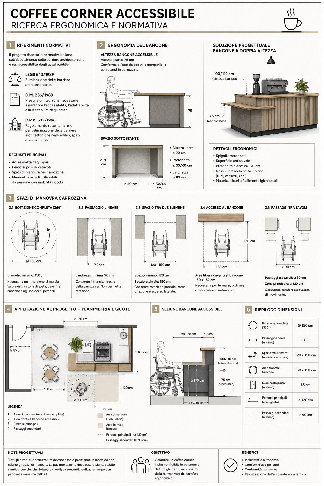
Fin qui, il progetto. Adesso il diario: come ci sono arrivate.
ChatGPT per pensare, scrivere i prompt e generare le immagini. Gemini per la pianta. Photoshop per pulire le foto, Magnific per migliorare la qualità finale.Il metodo
Prima togli, poi aggiungi.
Il gruppo parte sempre dalle foto vere della stanza. Prima le svuota: con un prompt descrittivo chiede a ChatGPT di togliere tutti gli arredi, poi di cambiare il pavimento. Gli ultimi oggetti rimasti li toglie in Photoshop, con il Riempimento generativo.
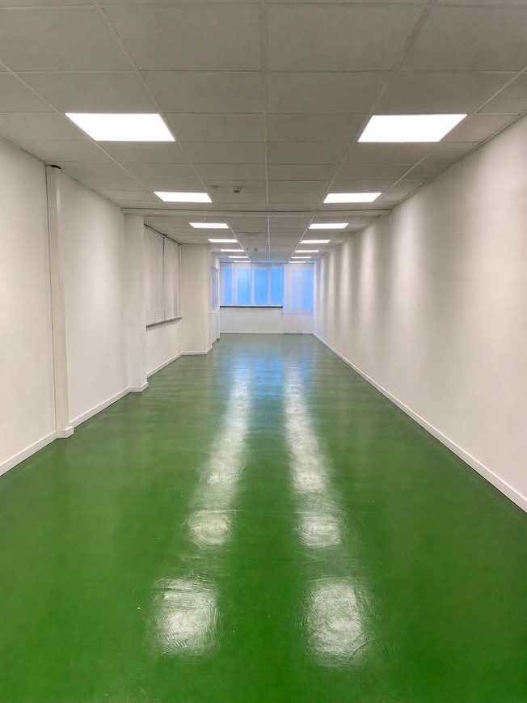
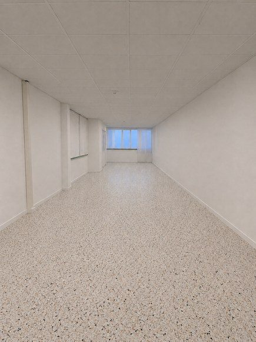
Solo dopo, su questa base pulita, si mettono gli arredi del progetto, la moodboard e il mobile. Alla fine Magnific migliora qualità, texture e colori.
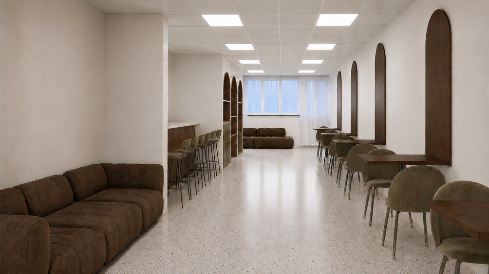
Lo stesso per la parete del mobile: prima la parete vuota, poi il mobile incassato.
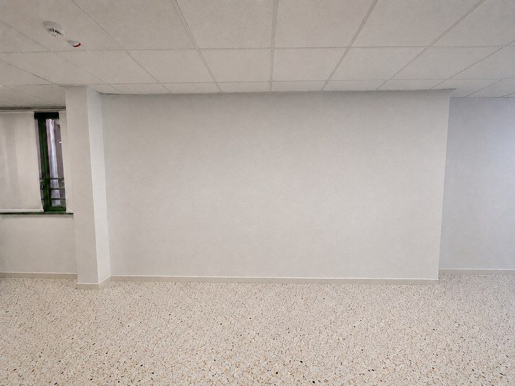
Su una stanza piena l'IA deve togliere e aggiungere insieme. Su una stanza vuota deve solo aggiungere.
Errore 1 di 2
Bellissimo. E inutilizzabile.
Il primo mobile nasce da uno schizzo, con un prompt a racconto. L'immagine è curata: archi, legno, luci sotto le mensole. Ma confrontala con il progetto.
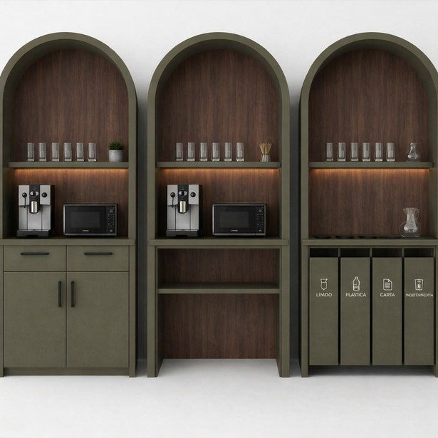
Il diario non elenca gli errori di questa immagine. Ma mettendola accanto al progetto si vedono:
Tre archi uguali I moduli hanno la stessa larghezza. Nel progetto il centrale è più largo.
Il modulo accessibile non lo è Il piano del secondo modulo è alla stessa altezza del primo. Manca il piano a 75 cm con lo spazio libero sotto.
Tutto doppio Macchina del caffè e microonde compaiono due volte, nei primi due moduli.
Scritte storpiate Sui contenitori della differenziata c'è «LIMDO» invece di «UMIDO», e «INDEFERNGKTA» invece di «INDIFFERENZIATA».
La correzione, scritta dal gruppo: niente più schizzo, ma un modello 3D semplice, fatto di forme geometriche di base, con le misure giuste. E al posto del racconto un prompt in JSON, con allegata la moodboard di materiali e finiture.
- Cosa è andato storto
- L'IA ha fatto un mobile credibile, ma ha perso la funzione del modulo accessibile: proprio il cuore del progetto.
- Perché succede
- Da uno schizzo l'IA legge forme, non misure: vede tre archi e li fa uguali. Gli spazi vuoti li riempie con gli oggetti più tipici di un angolo caffè, anche due volte. E le scritte piccole le sbaglia quasi sempre: le disegna lettera per lettera come se fossero figure.
- Come l'hanno risolto
- Un modello 3D essenziale fissa larghezze e altezze; il JSON dà a ogni modulo i suoi campi; la moodboard fissa i materiali.
- Da ricordare
- Un'immagine bella non vuol dire un progetto giusto. Controlla che ogni pezzo faccia quello per cui l'hai disegnato.
Errore 2 di 2
Bella stanza. Ma non è la nostra.
Una delle prime viste dell'ambiente. Divano, sedie verdi e archi ci sono. Ma la stanza è un'altra.
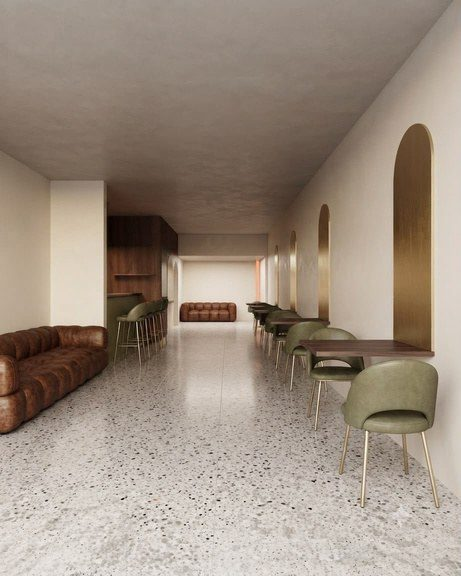
Nella prima vista non ci sono il controsoffitto con i pannelli luminosi né le finestre in fondo: è un corridoio qualsiasi, da rivista. Il diario non dice con quale prompt è nata; dice come l'hanno corretta: le viste finali partono dalle foto svuotate del capitolo 03, con un prompt descrittivo e uno in JSON, la moodboard e il mobile allegati.
- Cosa è andato storto
- L'atmosfera era giusta, ma la stanza non era più il giardino d'inverno dell'Accademia.
- Perché succede
- Se la stanza vera non tiene ferma l'immagine, l'IA prende l'atmosfera della moodboard e costruisce la stanza più tipica per quell'atmosfera. Un racconto lascia molta libertà; una foto e un JSON ne lasciano meno.
- Come l'hanno risolto
- Partendo sempre dalla foto vera svuotata, e descrivendo le parti in JSON.
- Da ricordare
- La moodboard dice come deve sembrare. La foto dice dove sei.
Il limite
Una vista alla volta.
Il gruppo lo scrive chiaro: è stato difficile avere più viste dello stesso ambiente, con inquadrature diverse. Per questo le immagini finali sono due, e ognuna parte da una foto vera.
Il motivo è semplice: ogni immagine generata è nuova. L'IA non ha la stanza in 3D: se cambi inquadratura, ridisegna tutto e qualcosa cambia (un tavolo, un arco, la luce). Negli altri lavori di questa pagina, Le scale in cortile e Garden of Peace, i gruppi hanno costruito un modello 3D della stanza proprio per avere viste che si somigliano.
E un secondo limite, sempre dal diario: con gli elementi molto specifici, come il modulo accessibile, l'IA fa più fatica a capire e a eseguire.
Una foto vera per ogni vista: è il modo più semplice per non perdere la stanza.
Cinque cose sull'IA.
- Prima svuota la stanza, poi aggiungi il progetto.
- Per un arredo preciso uno schizzo non basta: serve un 3D semplice, con le misure.
- Un racconto lascia libertà. Un JSON con la moodboard tiene ferme le parti.
- Bello non vuol dire giusto: controlla che ogni pezzo faccia il suo lavoro.
- Le norme e le misure le porti tu. L'IA ti aiuta a ripassarle.
L'IA ha generato le immagini.
Accorgersi che il modulo accessibile non lo era, e rimediare, è toccato al gruppo.
Tu sei il Ghost.